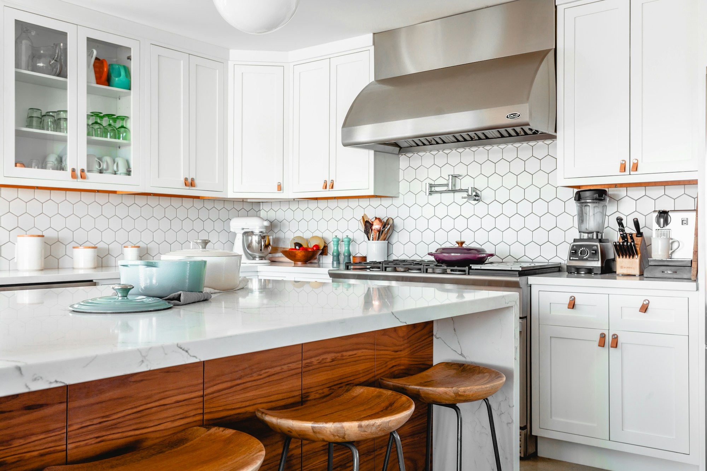
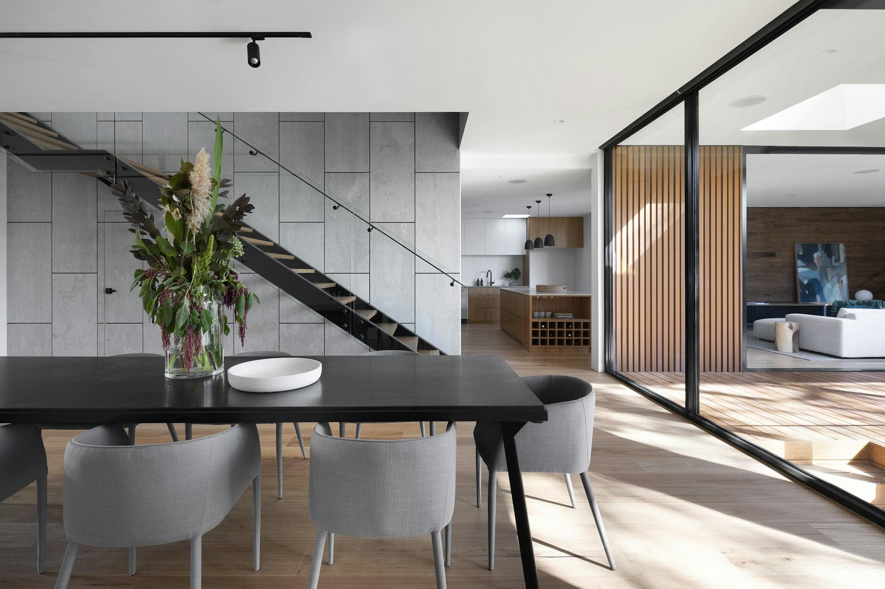

Your home.
Your way of living.
Share your plans, supplier drawings and the things that matter to you. We discuss the scope, timings and what your installation needs.
FOR THE WAY YOU LIVE
You’ve chosen every detail.
We make them belong together.

Your kitchen starts here +THE DIFFERENCE IS IN THE FIT
From the first cabinet to the final handle, we bring patience, precision and a practical understanding of how a kitchen comes together. Independent installation for spaces that feel completely your own.
ROOMS TO GATHER IN
Three directions. Plenty of possibility.
Illustrative interiors for this concept.

MORE THAN THE FINAL FINISH
The gaps between doors. The meeting of worktop and wall. The way a drawer closes. A well-fitted kitchen is a thousand small decisions, made carefully.
FIND YOUR FEELING
Soft stone, warm oak or a deeper green. Explore three material directions for a kitchen that feels like you.
Soft stone cabinetry, pale worktops and understated metalwork. A calm starting point for a light-filled room.
Material palette inspiration. Colours are illustrative and should be checked against physical samples.
FROM PLANS TO POURING THE FIRST COFFEE
A clear plan. An organised installation.
A space ready to enjoy.
Share your plans, supplier drawings and the things that matter to you. We discuss the scope, timings and what your installation needs.
A site survey checks the room against the drawings. We agree the work, clarify responsibilities and coordinate the installation sequence.
Cabinetry is fitted, details are aligned and finishing trades coordinated. We complete a final walkthrough and explain the care your kitchen needs.
A FEW THINGS YOU MAY BE WONDERING
That is the focus of this concept: independent installation. Your supplier’s drawings and specification would be reviewed before the scope is agreed.
The installation plan identifies which specialist trades are needed and who is responsible. Worktop templating, plumbing and electrical work must be coordinated around the cabinetry installation.
Timings depend on room preparation, kitchen size, supplier deliveries and specialist worktops. A project schedule would be agreed after the survey.
GOOD THINGS BEGIN WITH A CONVERSATION
Tell us about your kitchen, your plans,
and the life you want to build around it.
A fictional brand, created by Ivory Digital.
This demonstration form does not send enquiries.